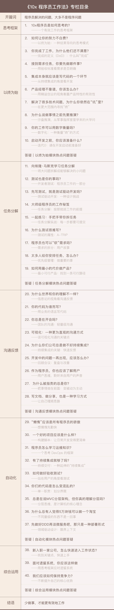

10x程序员工作法
你将获得
- “反直觉式”工作法，带你突破思维惯性；
- 1个框架+4个原则，可复制的“高效模版”；
- 顶级程序员的40个实操秘笈。
讲师介绍
郑晔，网名 dreamhead，极客时间《10x程序员工作法》《软件设计之美》《代码之丑》《程序员的测试课》专栏作者，学习人数 11w+。
他是一位有着 20 多年研发经验的技术老兵，Oracle Duke 选择奖获奖作品 Moco 的作者，曾担任火币网首席架构师、ThoughtWorks 首席咨询师。
人生目标是终身编程，他对代码整洁之道、自动化测试有深入理解，同时也热衷于不断优化代码质量和编程效率。
课程介绍
一个好程序员的工作效率是普通程序员的10倍，成为10x程序员应该是每个开发者的追求。
但效率是由编程能力决定的吗？答案是“未必”。工作中，你可能有过这样的困惑：作为程序员，你很想潜心钻研技术，却发现每天耗费大量精力解决的问题，多数都不是纯粹的技术问题，总会有一些令你抓狂的意外。你写完代码，但需求变了；你做出的东西，总是和要求不符，经常返工；你错估了工作量，因而要拼命加班弥补……诸如此类，不胜枚举。
于是，你的工作很被动，经常加班、熬夜、忙忙碌碌，却总在解决这类看似很“不值当”的事儿。
归根结底，程序员面对的并不是单纯的线性工作，你的编程技术提高，并不代表工作效率也会相应提高。你的工作方法，正在成倍地影响着你的开发效率。而只有了解并掌握了高效工作的方法和原理，你才真正有机会成为10x程序员，甚至是100x程序员。
为此，我们特意邀请了郑晔，在这个课程里为你分享顶级程序员的工作方法和思维方式。
模块介绍
本课程共分为六大模块。
有效工作的思考框架篇，为你提供一个可套用的思考框架，帮你在遇到问题时梳理自己真正要做的事情。同时还会给你提供践行这套框架所需的几项基本原则。
以终为始篇，从完成的定义、需求的完成、代码的完成、产品特性的完成等几个方面，来帮你明确真正的目标。通过跳出角色、数字校验、沙盘推演等方式确保目标的可行性，让你的每一丝努力都不白费。
任务分解篇，通过德雷克公式、埃隆·马斯克、“老虎”伍兹等案例，为你分析任务分解的重要性。通过对测试驱动开发进行完整地了解，让你更好地掌握任务分解的“度”。对需求以及产品的分解以及对优先级的讲解，可以让你与其他人的协作更加游刃有余，掌握主动权。
沟通反馈篇，从信息论的角度出发，让你明白“理解的偏差”是如何产生的。专栏将从代码的沟通、团队的沟通、可视化的沟通等角度为你讲解许多实践背后的沟通法则，通过开发的反馈、团队的反馈以及用户的反馈为你介绍反馈在软件开发中的价值，消除你与真实世界间的理解偏差。
自动化篇，你以为自动化就是写代码，其实不然。有时候不写代码而解决问题，才是一个好方案。自动化版块中从构建脚本、shell 编程出发，给你介绍了持续交付、验收测试背后的自动化理念，以及做好自动化需要了解的单一职责、分层架构等思想，让你知道什么情况下，你可以骄傲地“偷懒”。
综合运用篇，结合程序员日常工作场景，将1个思考框架和4个基本原则进行综合应用分析。让你能够学会高效工作方法并融会贯通，从各个维度帮你解决效率问题。
课程目录
